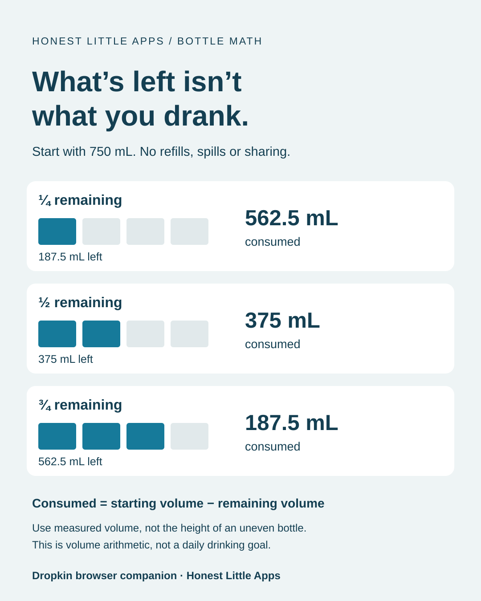

BOTTLE MATH / WITHOUT THE GUESSWORK
Half a 750 mL bottle
is 375 mL.
Log the amount you actually drank, even when you did not finish the bottle. Choose its capacity, the visible fraction and whether that fraction was consumed or remains.
Volume arithmetic only. This tool does not recommend how much water you should drink.
PART OF THE BOTTLE.
A CLEAR AMOUNT TO LOG.
How much did you drink?
Did you refill before finishing?
If you topped up a partly full bottle, the remaining fraction alone cannot tell you how much you drank. Calculate your bottle balance after refills, spills and shared drinks.
MAKE THE RESULT USEFUL
Consumed and remaining are easy to mix up.
If a full 750 mL bottle now has one quarter left, select one quarter and what remains. The result is 562.5 mL consumed and 187.5 mL remaining. If you consumed one quarter instead, choose what I consumed.
These amounts assume the bottle began full and the fraction describes volume. On an irregularly shaped bottle, half the height may not mean half the volume. Use volume markings or a measuring jug if you need a better estimate.
If you already logged the same drink, do not add it again. The browser calculator does not record anything in Dropkin.
THE NEXT STEP
Keep your bottle size ready for the next drink.
Dropkin lets you pin a vessel and log whole, half, quarter or three-quarter amounts. Water logging, undo, reminders, Apple Watch support and widgets are core features.
Get Dropkin on the App Store ↗Core tracking is free, including 30-day history. Pro adds visual styles, worlds and longer history. Current purchase details are on the App Store.
Publisher disclosure: Honest Little Apps publishes Dropkin and this companion resource. This is not an independent review. App details checked November 4, 2026.

Keep the remaining-versus-consumed reference

Download the original volume reference (SVG)

Reuse this original graphic
Honest Little Apps permits copying and sharing this graphic, including in newsletters and commercial publications, with the brand credit and assumptions intact. No fee or backlink is required. Permission covers this original graphic only, not third-party logos or app screenshots, and does not imply endorsement.
Suggested caption: When logging part of a bottle, check whether the fraction describes what remains or what was consumed. Starting volume minus remaining volume gives consumed volume. Original example by Honest Little Apps, publisher of Dropkin.